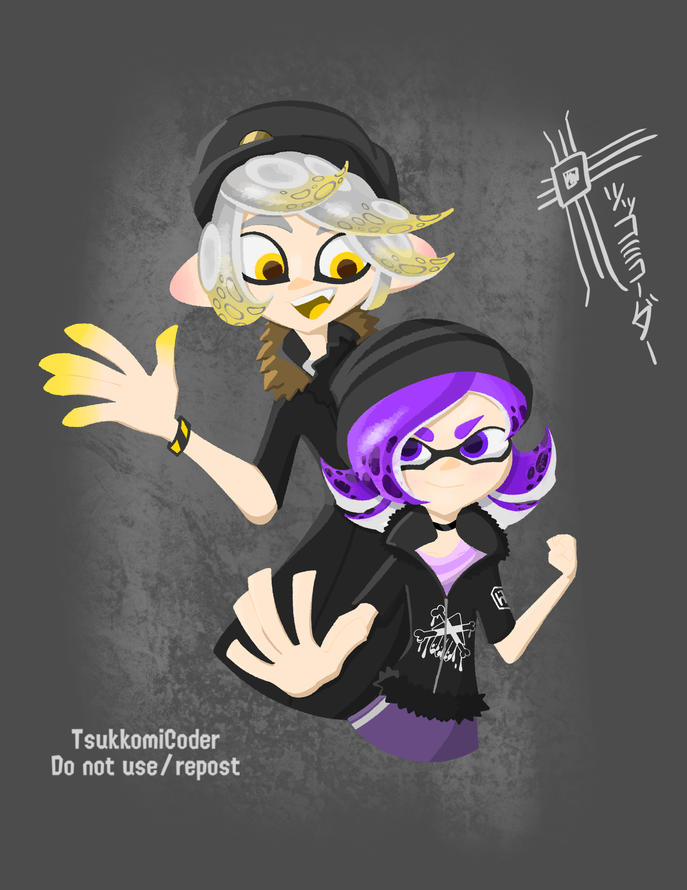
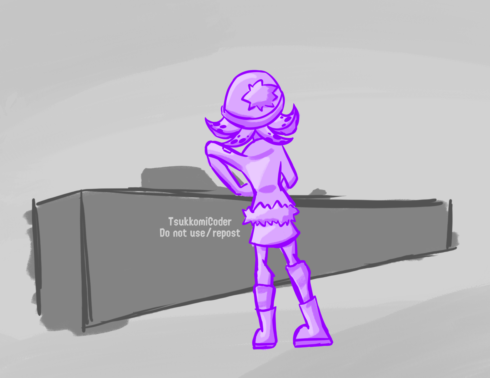

Fanfiction
by Tofu
[All art by TsukkomiCoder; do not use/repost]
Inkopolis, a cultural hub for inklings, cephalopods and whatever upright walking sea creatures now exist today. Seems like everyday is the same, but it somehow never gets boring, at least for most people. Maybe you just enjoy the warm comfort of a house in the country, or a nice looking suburban neighborhood… or maybe you’re just a rebellious angsty teen with crippling daddy issues and an unknowing thirst for oil- I mean ink… in that case you’d be Uzi Doorman.

“Tighten this screw, and this bolt, and come up with other things to say to sound busy…” Sitting at a workbench in the corner of the room was Uzi, her room was just about what you would expect. Dark, purple LED lights, overly dark posters of bands you would only have heard of if you were someone trying to act edgy, and a bed that for some reason was raised 5 feet off the ground.
“Then in goes the… magnetically amplified photon converger… and then whatever this thing is… and done!” Jumping out of her chair with pride, she struck a cringey looking power pose. In her right hand she held up what looked like an E-Liter with a whole lot of flashy lights, stickers plastered over the stock, and a small skull charm hanging off the back, just to top off the look.

Not wanting to wait any longer, Uzi now wanted to see if countless hours of work and complicated schematics and blueprints paid off. Getting ready to fire… she pulled the trigger and…
click!
“Oh, the safety’s on… Alright, now fire!”
BOOM!
A few seconds later, the door to Uzi’s room opens revealing her covered head to toe in purple ink. “So how’d it go?” The familiar and overly optimistic voice was that of Khan Doorman, Uzi’s dad, he wasn’t even trying to be sarcastic. “What do you think?!” Uzi replied. As she was wiping off the ink from her face, a realization hit her, the realization as to why her room and everything in it now has a temporary new coat of paint. “Oh I forgot the last part! The firing mechanism needs to be from an Octo Shot…”
“That's great Uzi.” “Bite me! I don’t care what you think!” She yelled then stomped her way to her room, shutting the door behind her… before opening it back up a few seconds later. “So like, can I uh… go out to Octo Valley?” “Just be back before dinner.” “Thanks…? I guess”
“Huh, that was easier than I thought.” With all of that out of the way, it came time for the ultimate sneaking mission. She reached into her hoodie’s pocket and pulled out a folded up piece of paper. It was a map, drawn in crayons and neon highlighters depicting Inkopolis and a red line going to a place labeled “Octo Valley”. Above it were the words “Totally Cool Stealth Sneaking Mission”. With everything ready to go, she began the long journey to find the final part for her ultimate E-Liter and railgun hybrid.
The journey to get to Octo Valley could have been as easy as just taking a bus or a train, but Uzi figured there was no fun in that. So instead she opted to take the scenic route and walk all the way there, which wasn’t actually all that bad. She got to see just how colorful the city could be at at night, the lights from the billboards and skyscrapers replaced the stars in the sky, combined with the occasional plane flying overhead, and the moon as a giant, although dim spotlight. As the walk continued, the lights from the skyscrapers grew dimmer, and were soon replaced by real stars, because of its distance and the fact that all if their settlements were underground, Octo Valley had an almost perfect view of the night sky. Anyone could admire the beauty of it, anyone except Uzi because she was trying to find the right piece of nightcore to play to better suit the mood.
By the time she actually found a good song, she had arrived. Apart from the night sky, Octo Valley looked more like a scrap yard, at least on the surface. The perfect place for sneaking around late at night to look for spare parts, and yet it still proved difficult to find anything. “Why is this so hard… you’d think with how much trash they throw out I’d be able to find something… then again I guess it still is trash.” Uzi began saying her thoughts out loud, after all there was no one here and she began getting frustrated with a lack of anything. She must’ve spent a good ten minutes walking and digging through garbage before something finally caught her eye, a shiny rounded piece of metal sticking out of some scrap.
Digging through the scrap yielded something truly amazing, a fully intact Octo Shot, still shining as if it were just manufactured. “Holy… who would throw away something like this?” In awe, she picked up the weapon, taking in every feature and relaying them out loud to herself. “The grip rubberized… the tank is made of a special plastic that won’t dent under impact, it has an original long type trigger, and the bell is thinner and longer for extra range and precision, and the nozzle increases the velocity of the ink! This… THIS THING IS AMAZING!”
Uzi almost felt disappointed that she would have to take a part out from this thing, it was practically as precious as gold, but she would soon find out this is the least of her concerns… The faint sound of something flying through the air caught her attention, then it grew louder, soon she realized what it was and ran to hid behind a large pile of more trash… The sound came to a stop as whatever was flying had landed, causing the ground to tremble slightly, accompanied by the sound of crunching rocks. The moonlight casted a shadow, whoever it was, they looked frighteningly tall and menacing…
Suddenly a voice rang out, “Hey! Is someone there?” At this point it was obvious that it was an octarian, not just that, but from the shape of the shadow it was an Octoling Soldier… an elite one too. As the footsteps grew closer Uzi’s thoughts began racing faster, she kept trying to think of a way to get out, “Do I run? Should I try to sneak away? Do I stay out?” The footsteps suddenly stopped… she looked out, and the shadow was gone. “He’s gone…” she thought to herself, then turned the other way to stand up when… The two awkwardly bumped into each other. “AHHH!-“ “OH BISCUITS!!!” The two jumped away, Uzi in particular fell to the ground and quickly scurried away behind some cover, the other mysterious tall person did the same.